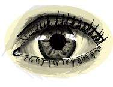

Hello there! I'm Aeriles (pronounced 'eh-ri-les'). I do research in software and systems, primarily learning how to make software run more efficiently. I also like creating things such as game engines, neural networks and CLI tools. Drawing is another hobby, and so is playing games, mostly RPGs. I'll use this site to write articles about software or systems engineering. I like sharing what I've learned, and I enjoy hearing other perspectives just as much. Whether you know the topic well or are just curious, don't be afraid to hmu.